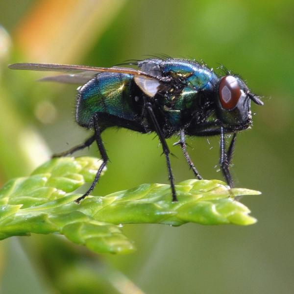

LAS MOSCAS

Su ciclo de vida es holometábolo; es decir, se suceden cuatro fases morfológicas: el huevo, la larva o cresa, pupa, y el adulto o imago. Algunas especies completan este ciclo en unos pocos días;
otras, en uno o dos meses. Pero en general la vida promedio de una mosca es de 15-25 días. Sin embargo, no todas las moscas ponen huevos. Algunas especies son ovovivíparas;
los huevos eclosionan en el interior de la madre, de manera que las crías salen al exterior ya en forma de larvas.
Viven cerca de la materia orgánica en descomposición (basura) y en sitios en los que haya materia fecal de animales. Los animales atraen a las moscas a las pocas horas de haber muerto.
La mayoría de las moscas son diurnas.Las moscas forman parte de casi todos los ecosistemas, en todos los hábitats terrestres.
Las consecuencias de su presencia en el medio ambiente y en la sociedad humana son de importancia excepcional.
- Las moscas típicas (Muscidae y familias próximas), como todos los dípteros,
poseen un cuerpo dividido en tres regiones o tagmas: cabeza, tórax y abdomen.
Poseen ojos compuestos por miles de facetas sensibles a la luz individualmente que
limpian constantemente frotando sus patas, y piezas bucales adaptadas para succionar,
lamer o perforar; ninguna mosca es capaz de morder o masticar, pero muchas especies
pican y succionan sangre (hematofagia). Tienen dos alas funcionales y
dos posteriores que están reducidas a unas estructuras llamadas halterios o
balancines, que actúan como órganos estabilizadores del desplazamiento
- Tienen el cuerpo cubierto por numerosas sedas sensoriales con las que pueden saborear, oler y sentir. Las sedas de las piezas bucales y de las patas se usan para saborear; las moscas saborean lo que pisan ya que tienen en la parte final de sus patas los receptores del sabor; si pisan algo de un sabor que les
sea agradable, bajan la boca y lo vuelven a probar.
- Las patas poseen unas almohadillas adherentes que les permiten
caminar sobre superficies lisas como el vidrio, incluso boca abajo
- Las moscas, como muchos tipos de insectos, son animales de sangre fría y solo pueden recibir calor de fuentes externas, por lo que son atraídas por la temperatura corporal de las personas y otros
animales, y es frecuente verlas tomando el sol.
- Otra particularidad es que cada hembra pone 2000 huevos de media a lo largo de su vida.
BACK